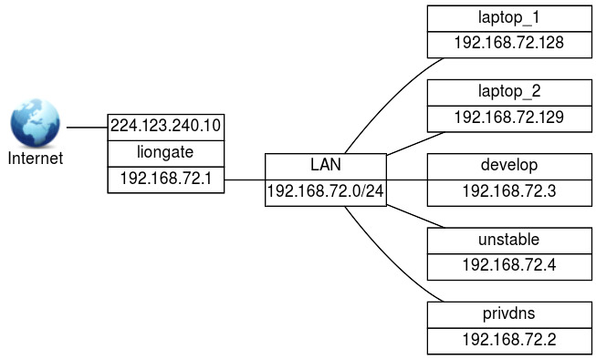

Securing a DNS Server (207.3)
Securing a DNS Server (207.3)¶
Candidates should be able to configure a DNS server to run as a non-root user and run in a chroot jail. This objective includes secure exchange of data between DNS servers.
Key Knowledge Areas¶
-
BIND 9 configuration files
-
Configuring BIND to run in a chroot jail
-
Split configuration of BIND using the forwarders statement
-
Configuring and using transaction signatures (TSIG)
-
Awareness of DNSSEC and basic tools
-
Awareness of DANE and related records
Terms and Utilities¶
-
/etc/named.conf -
/etc/passwd -
DNSSEC
-
dnssec-keygen -
dnssec-signzone
DNS Security Strategies¶
There are several strategies possible to make DNS more secure.
When a security bug is discovered in the BIND nameserver, it will often
be fixed within a few hours. This results in a new BIND release. Hence,
older versions of BIND may have security related bugs. BIND users should
frequently visit the BIND source site
(http://www.isc.org/downloads/bind/)
to check for new updates. You may consider subscribing to a security
announcement list; most Linux distributions have one. For instance, the
Debian debian-security-announce. To subscribe to that list visit
https://lists.debian.org.
Making information harder to get¶
Like all other programs, the BIND nameserver has features and security holes that can be misused. Criminal hackers (crackers) are well aware of this and keep track of versions and their security related issues. It is wise not to advertise your vulnerabilities so you may want to disable version number reporting in BIND.
Also, bulk nameserver data can be used to disclose details about your infrastructure. Hence restrictions can be installed to prevent a user from obtaining a large amount of nameserver data or at least to get it in a short timeframe. Another reason to do so is that nameservers are built to answer a large number of short queries in a short timeframe. Having to serve large blobs of data unexpectedly might disrupt services.
It is important to remember that hiding information is security through obscurity. Doing so, the easy way to get information has been blocked but there may be other ways to get it. Security through obscurity makes it harder, but not impossible to get the information. It does however introduce a longer timeframe in which you may be able to detect break-in attempts and act accordingly, for example by blocking the requestors IP address in your firewalls.
Hiding the version number¶
The command
1 | |
will show the version of the BIND nameserver on host target.
The BIND version can be hidden by entering a version statement inside
the options statement in named.conf. In the following example, the
version will be set to the string hidden.
1 2 3 4 5 6 | |
The CERT article (???) shows a way to limit access to the
bind zone. This an alternative to replacing the BIND version.
Limiting access¶
There are several ways to limit access to nameserver data. First, an
access control list must be defined. This is done with the acl
statement.
1 2 3 4 | |
This acl defines an access control list with label trusted. ACL
labels are used to simplify administration: you only need to update your
ACLs in one place, after that each reference to a label will
automatically point to the updated data.
A nameserver supports queries by resolvers and zone transfers by other nameservers.
normal queries¶
- Normal queries occur when a resolver needs data only on a very
limited subset of the data. For example it wants to know which IP
address is associated with a hostname. The
allow-querystatement controls from which hosts these queries are accepted.
zone transfers¶
-
The internet name space is built on the idea of a hierarchy of domains. To find the IP address of a host, you need its fully qualified domain name (FQDN). It consists of a series of subdomains separated by dots, for example:
www.example.com. The first section is the hostname, i.e. "www". Next is the "example" domain, which in turn is a subdivision of the "com" domain. Data on a single domain is called a "zone". Slave (backup) nameservers must be allowed to get the information from a master of the same zone. It is important to restrict these "zone transfers" to the servers that need the data only - no more.Zone transfers are controlled by the
allow-transferstatement. This statement may also be specified in thezonestatement, thereby overriding the globaloptions allow-transferstatement. Traditionally zone transfers can be initiated by anybody.
The allow-query statement can be used inside a zone statement or an
options statement as well. It can contain either an acl label (like
trusted), none, or one or more IP addresses or IP ranges. Use labels
whenever you can: keeping track of permissions is much easier that way
and it makes you less vulnerable to accidental oversights that may cause
security holes.
Limiting zone transfers¶
Both dig and host can initiate a zone transfer. By default, both
master and slave servers are allowed to send all zone information. An
example using the dig command:
1 2 3 4 5 6 7 8 9 10 11 12 13 14 15 16 17 18 19 20 21 22 23 24 25 26 27 28 29 30 31 32 33 34 35 36 37 38 39 40 41 42 43 44 45 46 47 48 49 50 | |
The previous example shows the complete information about
zonetransfer.me. The command host -l does the same but formats its
output differently:
1 2 3 4 5 6 7 8 9 10 11 12 13 14 15 16 17 18 19 20 | |
Only validated slave nameservers should be allowed to issue a zone
transfer request. This can be done by making adjustments to the
configuration files (named.conf) of both the master and all slaves of
a particular zone. For example:
On master nameservers.
On the master nameserver you should use the allow-transfer statement
to limit zone transfers to a list of known slave servers.
1 2 3 4 5 6 7 8 9 10 11 12 13 14 | |
Now only the slaves (only the host cat in the example) can request a
zone transfer from this master nameserver.
On slave nameservers.
On a slave nameserver you should never allow any zone transfers. This
can be achieved by setting the allow-transfer clause to 'none':
1 2 3 4 5 6 7 8 | |
Note IMPORTANT:*Don't forget to protect the *reverse zone as well!
Limiting queries¶
Though strictly spoken any client should be allowed to query a nameserver, in practice you may want to limit queries to a range of hosts, for example the hosts in your own networks. This can be done as follows:
1 2 3 4 5 6 7 8 9 10 11 12 13 | |
This limits queries to hosts with an IP address that starts with
224.123.240.
Controlling requests¶
There are more security controls that can be used.
Spoofing is when a malicious nameserver answers a client request with false data. As nameserver data is extensively cached for performance reasons, cached data can get infected with the falsified data. Spoofing is quite difficult to achieve, but it is wise to take precautions against it. Many older spoofing methods have already been eliminated by patches in the software but BIND can be configured to further enhance spoofing protection.
Limiting effects of an intrusion¶
Even when you are prepared to implement DNS fixes as soon as they appear, it may be too late - even if by only a couple of hours: your system could be compromised anyway. Therefore it is advisable to take precautions to minimize the impact.
Running BIND with less privileges¶
In some distributions, BIND runs as root. If BIND is compromised, the
attacker might have root access. This can be prevented by running BIND
under a non-privileged user and group.
It might be tempting to employ the user nobody and group nogroup.
But since many services already do this another security issue arises:
these services may be able to communicate in one way or another.
Best practice is to create a special user, e.g. named, and a
corresponding group (which could also be called named), and run the
nameserver under this user/group combination.
Use the -u and -g options to run named as named/named:
1 | |
On a Debian system the start line in /etc/init.d/bind would be:
1 | |
(For clarity other options were replaced by dots). The extra -- tells
the start-stop-daemon where its options end, all other options will be
passed on to the named program.
On a Red Hat (or compatible) system, the startup file can be found in
/etc/rc.d/init.d/named. On RHEL systems the service is already
configured to run under the user 'named'. You can set additional
options in /etc/sysconfig/named, for example you can add -u named
there. To start the service on Red Hat (compatible) systems, use the
service command:
1 2 3 | |
To make named start up in the proper runlevels on Red Hat (compatible)
systems run chkconfig named on.
Note
Make sure the nameserver has write access in the directory specified by
the directory option in named.conf.
Running BIND in a chroot jail¶
Another way to prevent damage from a compromised name-server process is
to put the process in a chroot jail. On startup the process will set a
directory (e.g. /var/cache/bind) as its root directory. Since no
process is ever capable of accessing anything above its set root, this
prevents the named process access to anything outside /var/cache/bind.
Preparing a chroot jail¶
All files that BIND needs must be copied to the new root directory. Full details can be found here: ???.
In short:
-
You will need to copy the
/etc,/dev,/lib,/sbinor/usr/sbin, and/var/rundirectories to the chroot. -
You'll probably need the
/dev/nulldevice under the new root. The next command will create it:1mknod -m 666 /var/cache/bind/dev/null c 1 3 -
You will need a
passwdand agroupfile in the new/etc:1 2
cd /var/cache/bind/etc cp -p /etc/{passwd,group} .This copies the literal passwd and group files. An alternative is to create special
passwdandgroupfiles, as will be shown in Combining special user and chroot.You may also need to copy
ld.so.cacheandlocaltime:1 2 3
cd /var/cache/bind/etc cp /etc/ld.so.cache . cp /etc/localtime . -
The BIND configuration should also be placed under the new root, as
namedmight need it when you reload the server. Given that your new root is set to/var/cache/bindyou should copy the file over to/var/cache/bind/etc/bind.Note that all directories in the new
named.conf- as specified with thedirectoryoption - are relative to the new root directory, so you do not need (or should) include the prefix/var/cache/bindthere. -
The new
libdirectory must contain at least all the shared libraries used by BIND. You can list these with thelddcommand. For instance, suppose the command:1ldd /usr/sbin/namedyields
1 2
libc.so.6 => /lib/libc.so.6 (0x40015000) /lib/ld-linux.so.2 => /lib/ld-linux.so.2 (0x40000000)In the (real)
/libdirectory,libc.so.6is a symlink tolibc-2.1.3.soandld-linux.so.2is a symlink told-2.1.3.so. Both the symlinks and the files they point to must be copied to thelibdirectory under the new root:1 2
cd /var/cache/bind/lib cp -pd /lib/{libc.so.6,libc-2.1.3.so,ld-linux.so.2,ld-2.1.3.so} . -
Both the
namedand thenamed-xferprograms must be present under the new root. Therndcprogram might be useful too. For example:1 2
cp -p /usr/sbin/named{,-xfer} /var/cache/bind/usr/sbin cp -p /usr/sbin/rndc /var/cache/bind/usr/sbin
Running BIND chrooted¶
To start the BIND nameserver in a chroot jail, simply add the -t
option followed by a directory name, either on the command line, in the
startup script, or in the sysconfig file.
Note
The -t option actually runs the chroot command to start the
nameserver. Read the manual pages on the chroot command to learn more.
In some systems you may need to add the option to the startup file. For example:
1 | |
or
1 | |
The BIND nameserver switches to the chroot immediately after command line argument parsing, so before configuration files are read. All paths in the configuration file should be relative to the new root.
Configuration for a chrooted BIND¶
As a consequence of a chrooted jail, all configuration files (e.g. zone
files and named.conf) must be present in a directory (e.g.,
/etc/bind) under the chroot directory.
Logging to syslog will not work either as the chrooted process has no
access to the Unix socket located outside the jail (no access to
/dev/log). There are various workarounds but the simplest is to use an
alternative logfile inside the chrooted environment. See this fragment
of a named.conf file you could use:
1 2 3 4 5 6 7 8 9 10 | |
This will write logging information to the file
/var/cache/bind/var/cache/bind/bind.log.
Zone files, if any, should also be put inside the chroot environment.
For instance, if named.conf contains a definition of a master zone
like this:
1 2 3 4 | |
Then the example.com.zone file needs to be located in
/var/cache/bind/etc/bind, again assuming your chroot directory is
/var/cache/bind.
Combining special user and chroot¶
More technical security can be obtained by using a combination of a
chrooted environment and running the nameserver under a special
non-privileged user and group. Note that these users will have to be
available in the copies of /etc/passwd and /etc/group that were
created in the chrooted environment. Finally, set permissions on the
chrooted zone and configuration files to make them read-only for the
named user and group.
Note Inspecting the source for BIND reveals the order of things:
-
parsing of command line options
-
chrooting
-
become a background process and write pid file
-
change to new user and group
The pid file is still written by the root user, after that the less
privileged 'named' user will be used.
The /etc/passwd, /etc/shadow, and /etc/group files in the chroot
environment may differ from the ones used by the rest of the system. The
special user and group for the nameserver may not even exist outside the
jail.
Securing nameserver connections¶
Restricting access to trusted hosts can be done using the
allow-transfer and allow-query statements in named.conf and may
help limit risks. Since the restrictions are IP address based, there is
still a residual risk that a villain use spoofing techniques. This could
still lead to the misuse of your system.
Signing data could help prevent this. When the server and client use a shared secret to sign the data between them we can be quite sure that both parties are whom they say they are.
To further secure nameserver connections a set of protocols called DNSSEC (Domain Name System Security Extensions) can be used as an extra security layer.
A cryptography crash course¶
To understand how DNSSEC works you need to be aware of the concepts of message authentication codes, hashes and asymmetrical encryption.
You are probably aware of the concept of symmetrical encryption. Using a key and some algorithm a cleartext message is scrambled into something incomprehensible. To restore the message, you need the same key. This works fine to shield a message from prying eyes, but it is not usable to prove that a message was sent by a given party. Either party could write a message, encrypt it with the private key and say it was the other party that wrote the message. There is no way you can tell if this is actually true.
The related concept of asymmetrical encryption also allows enciphering and deciphering of messages. But instead of one shared key there are two separate but related ones: one is used to encipher a message, the other to decipher it. After generating such a key pair the owner hands out only one of these keys to the other party or parties, the public key. The other half of the key pair is kept secret (the private key). Whomever has access to the public key can use it to encrypt a message. The owner of the corresponding private key will be the only person that can decipher it. Hence the sender can be sure that he alone can read the message. Moreover he can send an encrypted message, using the private key to encipher it. Everyone with access to the public key will be able decipher it, and can be sure that it really was the owner of the corresponding private key that sent the message.
Either private, public, or symmetric keys may be used to compute a MAC (Message Authentication Code). The algorithm to compute a MAC uses two inputs: the key and the message. The output is a fixed length string of hexadecimal digits. The MAC is computed using the key (or half of a key pair) and both the MAC and the message are subsequently sent. The receiving party will also use the message to calculate the MAC with the shared key or the other half of the key pair. If both hashes match there is a very high certainty the message has not been altered and that it originates from the sender. Note that when you use a MAC the message itself will not be encrypted, it can be read by anybody.
DNSSEC signs its messages with a MAC. It uses a private key that is only
known to DNSSEC. The corresponding public key is published on the
nameservers of the next level zone. It can be obtained by querying the
parent domain nameservers (the 'trust anchor'). So the public key for
example of the sidn.nl domain will be available on the 'nl'
nameservers. The public key itself in turn will be signed using a
private key whose public key will be available on the next level above.
So for the domain a.b.c the public keys of "a" can be found on the zone
server for "b". The public keys are signed with the private key whose
public key is published on the nameservers of "c" (You may want to read
that sentence again ;-) ).
Eventually the verification chain ends at the root servers. To obtain
the keys used to sign the top level domains the dig could be used but
of course, the query might be also be spoofed. Therefore serious
validating resolvers obtain the keys by other means. For instance by
retrieving them from a signed software package, similarly to the
built-in SSL root certificates in browsers.
Using the dnssec-keygen command¶
According to the lpic2 objective you must be able to use BIND 9's
dnssec-keygen.
Note
The dnssec-keygen command is part of the DNSSEC security extension for
DNS (fully described in ???).
DNSSEC was not fully implemented in BIND versions older than 9.2.
The 13 authoritive root servers use DNSSEC since May 6th 2010.
The dnssec-keygen may be used to generate public/private and symmetric
keys. See CrashCryptoCourse. The key pairs are meant to be used
to authenticate zone data. The symmetric keys are for
Request/Transaction signatures.
The required parameters for generating a key:
a algorithm (-a option)
- RSA | RSAMD5 | DH | DSA | RSASHA1 | HMAC-MD5
a key size (-b option)
- Depends on chosen algorithm: RSAMD5: [512..4096], RSASHA1: [512..4096], DH: [128..4096], DSA: [512..1024] and a multiple of 64, HMAC-MD5: [1..512]
a nametype (-n option)
- ZONE | HOST | ENTITY | USER | OTHER
Format of the key files¶
dnssec-keygen creates two files: Kname+algorithm+footprint.private and Kname+algorithm+footprint.key.
As an example, say we typed this command:
1 | |
After completion there will be two files, which have names similar to
Kexample.com.+003+58649.key and Kexample.com.+003+58649.private.
The private key file Kkey.example.com.+003+58649.private will have
contents similar to this:
1 2 3 4 5 6 7 | |
Note that lines that have been truncated for better readability end in an ellipsis.
The contents of Kkey.example.com.+003+58649.key will be similar to
this:
1 | |
Please note that generation of a HMAC-MD5 generates two files too, but both will contain the exact same 'key':
1 2 3 4 5 6 7 8 9 10 11 12 13 | |
Using the key¶
You can refer to a key by adding a key statement in named.conf, and
copy and paste the key you generated in that section:
1 2 3 4 | |
The key can be read (and possibly misused) by anybody who has access
rights to the named.conf file. Make sure it can not be read by anybody
but the nameserver user.
You can also put the key statement in a separate file and include that
file using the include statement. In this case the same warning
applies with regard to permissions.
To allow a client to use the key to connect to us we need to add a
server clause in our configuration. Say we are on a server which has
IP address 224.123.400.2 and want to allow access for a server with IP
address 224.123.400.1 we may use:
1 2 3 | |
On the other server (224.123.400.1) we need to do the same for server
224.123.400.2: add the key statement and copy in the key and allow
the other host to connect to us.
You can now configure the types of access that are allowed when one has a key. As an example, to limit zone-transfers to hosts that have the proper keys installed, use:
1 2 3 4 5 | |
See the named.conf(5) manual page for additional use cases.
dnssec-signzone {#dnssecsignzone}
DNSdnssec-keygen DNSdnssec-signzone Similar to the dnssec-keygen
command, BIND 9 includes the dnssec-signzone utility. As its name
implies dnssec-signzone can be used to sign a zone. We already saw how
keys are used to authorize servers. Signing a zone helps a client to
verify the integrity of the data.
DNS RRSIG When using DNSSEC, so called RRSIG records store the actual
digital signatures that were created while signing the resource records
for a domain using a dnskey.
The dnssec-signzone utility can be used to add RRSIG records to zones.
DNSNSEC NSEC records (Next SECure) are used to specify a range of
non-existing domains. NSEC records were invented to solve a problem:
if you queried a secured nameserver (one that signs the results of a
query) and you would ask for a non-existing name, it would simply return
- nothing. As you can't sign 'nothing' you would never know if the
anwer you got - nothing - really is what you should have gotten. Hence
NSEC records. A NSEC record (Next SECure) states a range of names that
do not exist. As NSEC records can be signed the answer can be trusted
again.
An Example of an NSEC record for the dnssec-tools.org domain:
1 | |
The record specifies that no DNS records exist between
adonis.zonetransfer.me. and helena.zonetransfer.me., which would exclude brutus.zonetransfer.me. from being an existing and therefore valid domain.
Use of NSEC records solves one problem, but introduces the next: it allows easy retrieval of all zone data by simply asking for a random name. This works because NSEC records assume alphabetical ordering of domain names. An example: if you would request 'a.example.com' and the answer would be 'do not have it, but the next valid record is joe.example.com', you know that joe.example.com exists and nothing before it does. So, then you might try jof.example.com, as 'f' is the next letter in the alphabet, etc. A solution to solve this problem is the NSEC3 record. The NSEC3 record is actually a NSEC record too but it will not return the next name, but the hash of the next name. If you ask for a.example.com you will get a record that says 'not here, and this is the hash of the next valid domain name'. There are no known methods - other than brute force - to find a name that matches that hash. If you already know the next valid domain name, you can calculate its hash and verify the answer. If you do not, the data will not help you to find out.
DANE¶
After having set up DNSSEC for a certain domain, it is possible to make use of DNS Authenticated Named Entities: DANE. In order to understand the advantage of DANE, we need to look at the problem DANE is trying to address. And this problem involves Certificate Authorities, or CA's in short.
The problem with CA-dependant encryption solutions lies in the implementation. When visiting a SSL/TLS Encrypted website via HTTPS, the browser software will gladly accept ANY certificate that uses a matching CN value AND is considered as being issued by a valid Certificate Authority. The CN value is dependent on DNS, and luckily we just set up DNSSEC to have some assurence regarding that. But, modern browsers come with over 1000 trusted root certificates. Every certificate being presented to the browser by a webserver, will be validated using these root certificates. If the presented certificate can be correlated to one of the root certificates, the science matches and the browser will not complain. And that's a problem.
In a perfect world, this system could provide some assurance. Unfortunately, every chain is only as strong as it's weakest link. Many known attack vectors exist in regards to integrity and confidentiality of HTTPS sessions. The Certificate Authorities are in a league of their own though. Just as every CA needs to be in control of their security 100% of the time, an attacker only needs one moment one CA is not. If an attacker gets hold of one of the keys used to sign certificates, it is Game Over[tm]. This has happened in the past, and there is no assurence it will not happen again in the future.
The problem consists of browsers accepting any valid certificate for any domain. And lack of control about exactly which certificates are valid for exactly what domain. There are a couple of workarounds out there like Certificate Transparency and Certificate Pinning. But for now, these remain to be workarounds for a flawed system. After all, the problem is not limited to your Desktop. The provided trust in CA-issued certificates becomes a problem when that CA cannot be trusted anymore. This has happened.
The infamous "Black Tulip" case describes a breach that has occured at a Dutch CA called DigiNotar. Attackers gained access to systems and generated fake certificates for major websites. Except, these certificates were not recognized as fake since they had been generated by a trusted CA. The certificate chain could be backtraced to DigiNotar and seemed valid. Despite DigiNotar never having received the order or permission to generate certificates for the affected domains. After it was discovered that attackers had issued multiple DigiNotar certificates, the trust in DigiNotar as a CA could not be maintained. The affected CA root certificate was removed from the list of trusted certificates by many software vendors. DigiNotar filed for bankcrupcy within weeks.
If that already sounds bad, consider the total impact of this data breach. Because certificates issued by DigiNotar were blacklisted as a result, software depending on valid certificates could no longer function properly. This had real-world consequences, since DigiNotar also issued certificates to government and trading related customers. The tulips could not be shipped and went black, so to say. For this reason, some large corporations that depend on their online presence for core business get their certificates from more than one CA. This way, if one CA gets compromised and all related certificates have to be revoked, that will not be a Single Point Of Failure to the business. Good for the business, not good for transparency in regards to certificates.
This is where DANE comes in; While depending on the assurance provided by DNSSEC, DNS records are provided with certificate associating information. This mitigates the dependency regarding static root certificates for certain types of SSL/TLS connections. These records have come to be known as TLSA records. As with HTTPS, DANE should be implemented either correctly or better yet not at all. When implemented correctly, DANE will provide added integrity regarding the certificates being used for encryption. By doing so, the confidentiality aspect of the session gets a boost as well.
The TLSA Resource Record syntax is described in RFC 6698 sections 2 and 7. An example of a SHA-256 hashed association of a PKIX CA Certificate taken from RFC 6698 looks as follows:
1 2 3 | |
Each TLSA Resource Record (RR) specifies the following fields in order
to create the certificate association: Certificate Usage,
Selector, Matching Type and Certificate Association Data. The
Certificate Association Data Field in the example above is represented
by the SHA-256 hash string value. The contents of this Data Field are
dependent on the values preceeding from the previous three RR fields.
These three fields are represented by '0 0 1' in the example above. We
will explain these fields in reverse order. This makes sense if you look
at the hash value and then read the values from right to left as
'1 0 0'.
The value '1' in the third field from the example above represents the
Matching Type field. This field can have a value between '0' and
'2'. It specifies whether the Certification Association Data field
contents are NOT hashed (value 0), hashed using SHA-256 (value 1) or
hashed using SHA-512 (value 2). In the example above, the contents of
the Certificate Association Data field represent a SHA-256 hash string.
The second field represented by a '0' represents the Selector Field.
The TLSA Selectors are represented by either a '0' or a '1'. A field
value of '0' indicates that the Certificate Association Data field
contents are based on a full certificate. A value of '1' indicates
that the contents of the Certificate Association Data Field are based on
the Public Key of a certificate. In the example above, the Selector
field indicates that the SHA-256 hash string from the Certificate
Association Data field is based on a full certificate.
The first field represented by a '0' in the example above represents
the Certificate Usage field. This field may hold a value between '0'
and '3'. A value of '0' (PKIX-TA) specifies that the Certificate
Association Data field value is related to a public Certificate
Authority from the X.509 tree. A value of '1' (PKIX-EE) specifies that
the Certificate Association Data field value is related to the
certificate on the endpoint you are connecting to, using X.509
validation. A value of '2' (DANE-TA) specifies that the Certificate
Association Data field value is related to a private CA from the X.509
tree. And a value of '3' (DANE-EE) specifies that the Certificate
Association Data field value is related to the certificate on the
endpoint you are connecting to. In the example above, the Certificate
Usage field indicates that the certificate the SHA-256 string is based
on belongs to a public Certificate Authority from the X.509 tree. Those
are the same Certificate authorities that your browser uses. Field
values of '0', '1' or '2' still depend on these CA root
certificates. The true benefit of TLSA records gets unleashed when
DNSSEC is properly configured and using a value of '3' as a value for
the Certificate Usage Field.
Looking back at the very start of the TLSA Resource Record example
above, the syntax clearly follows the _port._protocol.subject syntax.
The TLSA Resource Record always starts with an underscore '_'. Then
the service port is defined (443 for HTTPS) and a transport protocol is
specified. This can be either tcp, udp, or sctp according to RFC 6698.
When generating TLSA records, it is also possible to specify dccp as a
transport protocol. RFC 6698 does not explicitly mention dccp though.
The subject field usually equals the servername and should match the CN
value of the certificate.
It is not mandatory for the LPIC-2 exam to know all these details by
heart. But, it is good to have an understanding about the different
options and their impact. Just as using a value of '3' as the
Certificate Usage can have some security advantages, a value of '0' as
the Matching Type field can result in fragmented DNS replies when
complete certificates end up in TLSA Resource Records. The success of
security comes with usability.
To generate your own TLSA records, a page like the following can be used and should provide some insight in to the used parameters and values: www.huque.com/bin/gen_tlsa
As much as the previously mentioned website is suitable for creating
occasional TLSA records, there are circumstances when custom tooling is
more appropriate. The hashslinger command-line tool has been developed
to ease the creation of TLSA records.
When implemented correctly and supported widely, DANE has the potential to secure certificate based encryption for a variety of services.
Internal DNS¶
If your organization uses TCP/IP on its internal networks NDASH a very common situation nowadays NDASH they will also need a method to locally resolve hostnames into IP addresses and vice versa. In smaller organizations whose infrastructure typically does not change much over time they might use static files (hostfiles), but given the low break-even point between the costs of maintaining such an infrastructure and the costs of installing and maintaining your own DNS most organizations run an internal DNS system.
In simpler setups, only one nameserver may suffice, though given the low costs involved nameservers will often be installed in pairs. Resolvers aware of more than one nameserver will query the other server if the primary server does not respond. If you have a number of divisions and various interconnected networks your setup will start resembling the Internet. But there are important differences.
Suppose your division is located outside the firm's main building. The
workgroup will have its own nameservers. Internally, hosts will be
members of the exworks (short for bindexworks exampleworks) domain,
that is, directly under the root (.) domain. To prevent accidental
routing on the Internet the company chooses the use of one of the
non-routable (private) IP networks: 192.168.72. This implies we need
to maintain both the domain zone and the reverse lookup zone
72.168.192.in-addr.arpa.
We can't use the Internet infrastructure as their root nameservers
don't know anything about the exworks and 72.168.192.in-addr.arpa
zones, nor should they: we chose to use a private network after all. If
we also like to be able to resolve real Internet hostnames and
addresses, we can use what is known as a split-level DNS setup.
split-level DNS Two split-level DNS setups will be shown.
Limiting negotiations¶
We can use a feature introduced into BIND in the days of dial-up connections. BIND behind a dial-up connection can be a nuisance: every time a DNS wants to communicate with a root nameserver, an automatic dialer sets up a connection. This is expensive. You can stop BIND from doing this by putting bindheartbeat-interval
1 2 3 | |
inside the options statement of the named.conf file. It is a bit
counterintuitive to have to put dialup yes in a configuration actually
meant to prevent dialups, but that's the way to do it.
This trick can also be used to limit communication from an internal zone
like exworks. The exworks and 72.168.192.in-addr.arpa zones are
implemented as conventional master zones as described earlier in this
chapter. The fundamental problem with this is that the real root servers
still don't delegate the exworks (and corresponding reverse) domain.
Therefore we should pull the internal zones together with the root nameserver definition into a separate DNS implementation. This requires at least two independent nameservers, and they can be set up in two different ways, as will be described below.
Split DNS: stand-alone internal master¶
The first approach consists of a stand-alone nameserver (that is, bind stand-alone master master for the internal zones) and another nameserver on another host that can be used to resolve names from both the outside world and the internal zones.
The figure below presents the exworks domain that is used as an
example.

The exworks network.
The two nameservers in this example will be on different hosts. The
first nameserver runs on privdns and will provide internal zone
information. The other nameserver is on liongate, which will be a
forwarding nameserver for both the internal zones and the outside world.
The host privdns (for private DNS) will contain the DNS for both the
exworks and 72.168.192.in-addr.arpa zones. This nameserver will have
the following characteristics:
-
it will be master for the root domain, but no DNS except itself will be able to access this information
-
it will be master for the the
exworksand72.168.192.in-addr.arpadomains. Only other nameservers inside the building will be able to access this information
On the other hand, liongate will do the following:
-
do forwarding for the internal zones (this should be done first)
-
do forwarding for the outside world
Configuring the master on privdns¶
First, prepare a master file for the internal root zone. For example:
1 2 3 4 5 6 7 8 9 10 11 12 13 | |
Note the glue records that delegate the exworks and
72.168.192.in-addr.arpa zones as being hosted on nameserver
192.168.72.2.
Next, add a zone statement in named.conf that points to the master
file for the root zone:
1 2 3 4 5 6 7 | |
Using the type master tells the DNS that this really is a master
server for the root zone. The root zone should not be known to any other
nameservers, therefore the allow-transfer and bind allow-transfer bind
allow-query allow-query are set to none.
Note
The root zone definition type hint, as present in a default
caching-only server, should be turned off (by not including it in the
named.conf file).
Now, prepare zone files for the exworks and 72.168.192.in-addr.arpa
zones, and add the corresponding zone entries in the named.conf
file. The entry for exworks should look like this:
1 2 3 4 5 6 | |
The nameserver on liongate is the one providing names to the other
hosts, so the IP address of liongate must be listed in the
allow-query field.
The same must be done for the corresponding reverse zone.
Make sure the options statement contains
1 2 | |
These statements tell the nameserver it should not accept queries for zones other than the ones it knows about.
Hosts in the exworks zone should point their resolv.conf to
liongate. bind resolv.conf That is, the file should contain the line:
1 | |
where 192.168.72.1 is the IP address of liongate. On liongate
itself, however,
1 | |
ensures that local queries are run over the local loop interface, which is more efficient than using the outside IP address.
Note
The entries in resolv.conf on privdns should not point to the
nameserver on privdns itself. If the host is to be used for purposes
that require name resolving, it is better to point the entries to the
nameserver on liongate.
Configuring DNS on liongate¶
The functionality of the DNS is twofold: first it should resolve names
of the exworks zone (and corresponding reverse zone), secondly, it
should resolve names from the outside world.
With the following forwarders statement queries bind forwarders to
this nameserver are being forwarded to one on the listed IP addresses
(remember that forwarders is part of the options statement):
1 2 3 4 | |
The nameservers are tried in the order in which they are listed.
Requests are forwarded to privdns first. If that one does not have the
answer, the DNS of the ISP is contacted instead.
Note that the IP address of privdns should be mentioned first: we
don't want requests for internal names be sent to the ISP.
Alternatively, the nameserver on liongate can be configured as slave
for the exworks domain and corresponding reverse domain. We will
discuss this in the next section.
Alternatives¶
There are two alternatives to this setup. Both require two separate nameservers.
The first alternative is to use two nameserver statements in
resolv.conf:
1 2 | |
The first IP address points to privdns, the second to liongate. In
this situation, privdns should also accept queries from
192.168.72.0/24 and the forwarders statement on liongate should
not contain the 192.168.72.2 (the IP address of privdns). The
downside of this is that there is no single nameserver entry-point.
The second alternative is to use a slave setup bind slave for the
exworks (plus corresponding reverse) domain. This situation is
required when two nameservers are running on the same host. This will be
elaborated below, so it will not be discussed here. For this to work,
the forwarders statement on liongate should not contain the IP
address of privdns.
Split DNS: two DNS servers on one machine¶
We assume the same network again but with one important Split DNS
difference: host privdns is not available. This implies that the
internal nameserver must now run on one of the other hosts, which also
needs access to the outside world.
Both nameservers will run on the same host. At least one of the nameservers must run chrooted. bind chrooted
Two nameservers on one host¶
The following settings must be made:
-
The internal nameserver.
There is a master nameserver that serves the
exworksand corresponding reverse domains. It runs chrooted, under its own uid/gid, listening at a special port. It will not do any other resolver work. This nameserver will be referred to as the internal nameserver. -
The visible nameserver.
The other nameserver does not need to run chrooted, but it does have its own uid/gid. It serves as a
slavefor theexworksand72.168.192.in-addr.arpadomains. It also forwards other requests to the ISP. This nameserver will be referred to as the visible nameserver, since this is the nameserver that will be visible to other hosts.
The nameserver line in the resolv.conf file for the visible
nameserver points to 127.0.0.1; other hosts in the exworks domain
point their resolver to 192.168.72.1 (the IP address of liongate).
Configuring the internal nameserver¶
The nameserver is put into a chroot jail with his own user and group
bind jail ID's. The nameserver will chroot to
/var/cache/bindInternal. It will run, for example, as user inamed
with UID 5301 and as group with the same name and GID 5301.
This chrooted nameserver should be able to write to some directories. To
allow this, these directories should be owned by the inamed UID and
GID. The directories (inside the chroot jail) that need this are
/var/run (because it needs to write named.pid) and bind named.pid
/var/cache/bind (because it needs to write e.g. a logfile).
The configuration directory will be /var/cache/bindInternal/etc/bind,
so that references from the named.conf file in that directory will be
to /etc/bind. Files in that directory include the master file for the
root zone and the zone files for both the exworks and
72.168.192.in-addr.arpa domains.
Here are the three master zone definitions:
1 2 3 4 5 6 7 8 9 10 11 12 13 14 15 16 17 18 19 20 21 22 23 24 25 26 27 28 29 30 31 32 33 34 35 | |
The directory refers to a location inside the chrooted tree. The
listen-on specifies that this nameserver should only listen on port
5353 on the internal address 127.0.0.1. The other two, recursion
and fetch-glue, prevent resolving anything except bind fetch-glue bind
recursion the zones that were defined here.
The root zone should does not allow queries and transfers, as it is meant for local use only.
The exworks and 72.168.192.in-addr.arpa zone definitions allow zone
transfers and queries originated from the other nameserver (the visible
one). No other transfers and queries are allowed for these zones.
Configuring the visible nameserver¶
This section will describe how to configure the visible nameserver (if in doubt read Two nameservers on one host again). Remember it does not run chrooted, nor does it use an alternate port. It does run under its own UID/GID though.
The visible nameserver should be able to answer queries about both the inside and outside worlds.
Note
The visible nameserver on liongate could use forwarding to connect
to the internal nameserver, given the software allows you to specify a
port.
The named.conf for the visible nameserver, with common parts omitted,
looks like this:
1 2 3 4 5 6 7 8 9 10 11 12 13 14 15 16 17 18 19 20 21 22 23 24 25 26 27 28 29 30 31 32 33 34 | |
This implements:
-
a nameserver to perform slave resolving for the
exworksand72.168.192.in-addr.arpazones. -
forwarding, to resolve names from the outside world.
The directory specified by the directory statement must be writable by
the running nameserver. I.e. if the nameserver runs as user vnamed and
group vnamed, the directory /var/cache/bindVisible must be owned by
user vnamed and group vnamed. The slave files exworks.slave and
72.168.192.in-addr.arpa.slave will be put there.
Let's look at the slave zone definitions. Both refer to a master at
port 5353 on the same host. Both definitions do not allow full zone
transfers. The only zone transfers are from master (at port 5353) to
slave (the configuration for the master allows this, see Configuring
the master on ). Normal queries are allowed for the
localhost (127.0.0.1, i.e., internal connections on liongate), as
well as all hosts in the exworks zone (192.168.72.x).
On liongate the resolv.conf file will contain
1 | |
that is, it points to the visible nameserver which listens on port
53. Other hosts in the exworks domain will have
1 | |
(the IP address of liongate) in their resolv.conf.
Note
It is not possible to specify a portnumber in resolv.conf. The
specified nameserver(s) will be contacted at port 53.
A problem¶
A master nameserver will send a notify message to a slave nameserver
whenever a zone definition changes. This causes the slave to initiate a
zone transfer. But as both servers listen on the same IP address, the
only thing to distinct them are their port numbers. Alas you can't
specify a port number in a also-notify statement, so there is no way
to notify the slave if the master data has changed.
There is a simple solution to this problem: if the master zone changes and after the internal nameserver has reloaded the zone data, restart the visible nameserver too.
Linux supports binding more than one IP address to a network interface. Another approach would be to give both servers a unique local IP address. This involves other configuration changes, which by now you should be able to manage. Therefore the exercise on how to do this is left to the reader.
TSIG¶
TSIG (Transaction SIGnatures) provides a secured communication channel between nameservers for zone transfers. It is a resource friendly add-on, available in BIND version 8.2 and higher.
TSIG uses shared keys and one-way hashing to provide authenticity and integrity. See CrashCryptoCourse for a short introduction to these concepts.
Configuring TSIG for BIND¶
We need a HMAC-MD55 key pair, which can be generated using the now
familiar dnssec-keygen command:
1 2 | |
The utility will generate two output files. Note that the keys in both files will always be duplicates as we required a HMAC-MD5.
1 2 3 | |
The contents of the private keyfile might be similar to this:
1 2 3 4 5 6 7 8 | |
Create a file to hold the secret you just generated and the IP addresses
of slave nameservers. The name of the file can be freely chosen, in this
example tsig.key will be used. The syntax of this file can be learned
from this example:
1 2 3 4 5 6 7 8 9 10 11 12 13 14 | |
Note: the server option points to the slave nameserver.
Edit the BIND main configuration file named.conf and include the file
like this:
1 | |
Now, reload the BIND configuration:
1 2 | |
Use rndc tsig-list to list the currently active TSIG keys. This
completes the configuration on the master. Next we will need to
configure the slaves.
To setup the slave nameserver, create a similar tsig.key file there,
that contains the same secret as used on the master nameserver. However,
now make the server option point to the master nameserver:
1 2 3 4 5 6 7 8 9 | |
As before, include the path to the tsig.key file to the BIND main
configuration file and reload the configuration. TSIG is now enabled.